Jean Lahoud
Postdoctoral Researcher2020–present · MBZUAI, UAE
Research group / Supervision
A supervision and co-supervision record spanning more than 30 postdoctoral researchers, PhD and MSc students, research assistants, and visiting students.
Postdoctoral supervision at MBZUAI.
2020–present · MBZUAI, UAE

2024–present · MBZUAI, UAE

2025–present · MBZUAI, UAE
2023–2024 · MBZUAI, UAE
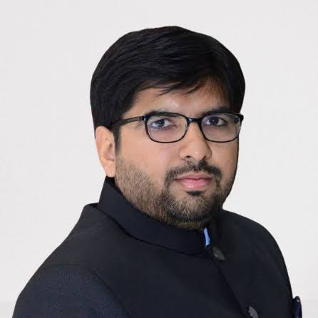
2022–2023 · MBZUAI, UAE
Doctoral supervision and co-supervision at MBZUAI.

2024–2026 · MBZUAI, UAE
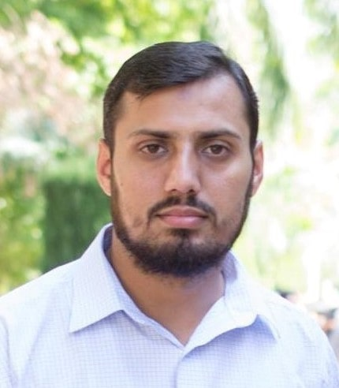
2021–2024 · MBZUAI, UAE

2023–2026 · MBZUAI, UAE
2022–2025 · MBZUAI, UAE
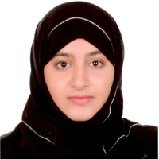
2023–2026 · MBZUAI, UAE
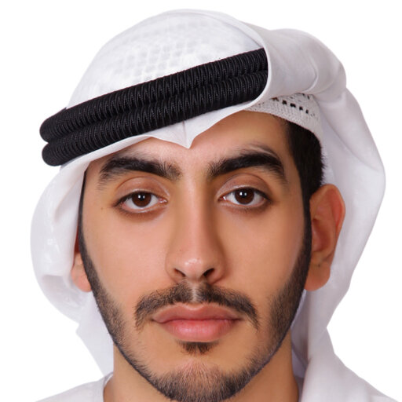
2023–2026 · MBZUAI, UAE
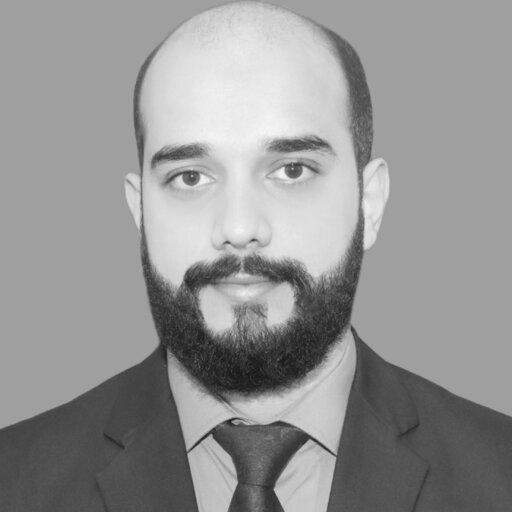
2023–2026 · MBZUAI, UAE
MSc thesis supervision and co-supervision at MBZUAI.
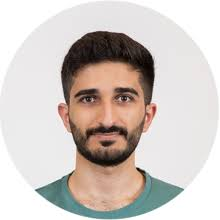
2020–2022 · MBZUAI, UAE
2020–2022 · MBZUAI, UAE
2021–2023 · MBZUAI, UAE
2021–2023 · MBZUAI, UAE
2020–2023 · MBZUAI, UAE
2022–2024 · MBZUAI, UAE
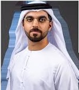
2022–2024 · MBZUAI, UAE
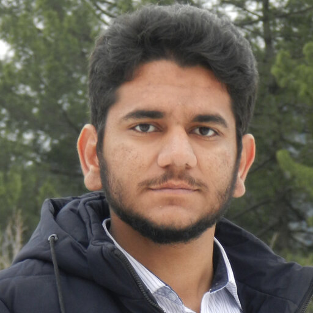
2023–2025 · MBZUAI, UAE
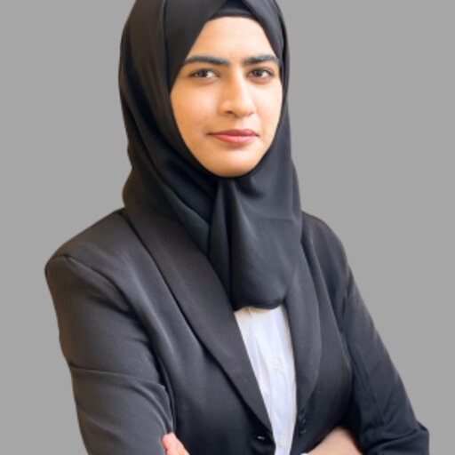
2023–2025 · MBZUAI, UAE
2024–2026 · MBZUAI, UAE

2025–2027 · MBZUAI, UAE

2025–2027 · MBZUAI, UAE
2025–2027 · MBZUAI, UAE
Research assistant and visiting-student supervision.

2024–2025 · MBZUAI, UAE

2025–2026 · Tianjin University, China
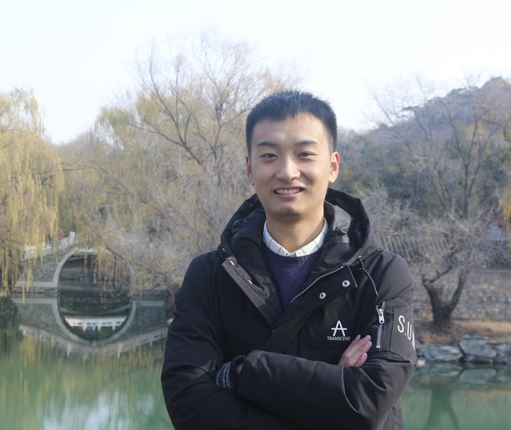
2024–2025 · Beijing Institute of Technology, China
2018–2019 · Tianjin University, China
2018–2019 · Tianjin University, China
2018–2019 · Tianjin University, China

2022–2024 · MBZUAI, UAE
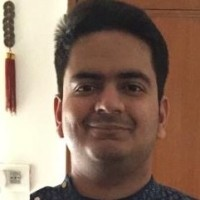
2020–2021 · MBZUAI, UAE